The Unknown Soldier presentation.
L'inhumation solennelle du Soldat inconnu sous l'Arc de Triomphe, à Paris, le 11 novembre 1920 — d'après la présentation originale, remise en page avec ses images et son texte, en français.
Download the original presentation (.pps) ›
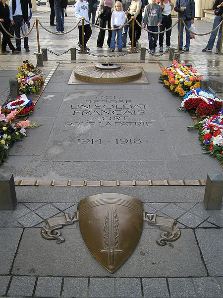
L'inhumation solennelle du Soldat inconnu sous l'Arc-de-Triomphe de l'Etoile à Paris, le 11 novembre 1920, illustre bien cette mémoire nationale érigée en mythe.
Dès le 6 novembre 1916, dans un discours prononcé au cimetière de l'Est à Rennes, François SIMON, président du Souvenir Français de cette ville, avait émis l'idée de placer un soldat inconnu au Panthéon :
Pourquoi la France n'ouvrirait-elle pas les portes du Panthéon à l'un de nos combattants ignorés, mort bravement pour la Patrie, avec, pour inscription sur la pierre, deux mots : UN SOLDAT - deux dates : 1914-1917 ? Cette inhumation d'un simple soldat sous ce dôme, où reposent tant de gloires et de génies, serait comme un symbole ; et plus, ce serait un hommage rendu à l'armée française toute entière.
Le 12 juillet 1918, Maurice MAUNOURY, député, propose d'élever un tombeau au soldat anonyme.
Le 07 décembre de la même année M. CRESCITZ propose à CLEMENCEAU le transfert au Panthéon du corps d'un soldat inconnu.
Le 12 novembre 1919, la Chambre des députés décide que le corps d'un soldat inconnu sera transporté au Panthéon.
Mais les associations d'anciens combattants, considérant que le soldat inconnu devait être inhumé dans un lieu spécifique, se sont mobilisés pour que ce soit sous l'Arc de Triomphe.
En 1919 et 1920, une campagne de presse propose l'inhumation d'un soldat inconnu sous l'Arc de Triomphe.
Le 8 novembre 1920, les députés ont voté à l'unanimité la loi suivante :
Article 1.Les honneurs du Panthéon seront rendus aux restes d'un des soldats non identifiés au champ d'honneur au cours de la guerre 1914-1918.La translation des restes de ce soldat sera faite solennellementle 11 novembre 1920. Article 2.Le même jour, les restes du soldat inconnu seront inhumés sous l'Arc de Triomphe.
Le 08 novembre 1920, les députés, convoqués en session extraordinaire, adoptaient définitivement la loi relative " à la translation et à l'inhumation des restes d'un soldat français non identifié ". Il s'agissait
de placer, dans un lieu hautement symbolique et d'accès aisé, le corps d'un combattant sans nom qui représenterait ainsi tous les morts au combat non identifiés, chaque famille pouvant le reconnaître pour sein. " Fut-il le plus humble des citoyens, ouvrier ou patron, paysan ou bourgeois, illettré ou savant, patricien ou plébéien, s'exclama dans une superbe envolée le rapporteur du projet, Georges Maurisson, qu'importe, pour tous il sera le plus grand. "
La décision
Le 8 novembre 1920, les députés réunis en session extraordinaire adoptaient la loi concernant « la translation et l'inhumation des restes d'un soldat français non identifié ».
Encore fallait-il placer dans un lieu symbolique et d'accès facile le corps de ce combattant qui représenterait tous les soldats morts au combat, non identifiés.
Il restait à choisir la dépouille du soldat inconnu.
Huit corps de soldats ayant servi sous l'uniforme français mais qui n'avaient pu être identifiés ont été exhumés dans les huit régions où s'étaient déroulés les combats les plus meurtriers : en Flandres, en Artois, dans la Somme, en Ile-de-France, au Chemin des Dames, en Champagne, à Verdun et en Lorraine.
Le 9 novembre 1920, les huit cercueils de chêne ont été transférés à la citadelle de Verdun, dans une casemate où ils ont été plusieurs fois changés de place pour préserver l'anonymat de la provenance de chacun d'entre eux.
Une tâche ardue :
Chaque commandant des huit secteurs tenus pendant la guerre (Artois, Somme, Île-de-France, Chemin des Dames, Champagne, Lorraine, Verdun et les Flandres) reçut comme instruction de « faire exhumer dans un endroit qui restera secret le corps d'un militaire dont l'identité comme française est certaine mais dont l'identité personnelle n'a pu être établie ».
Mission pour le moins compliquée, si difficile qu'il fut impossible dans un des secteurs de désigner un corps avec certitude qu'il soit bien français.
Le 10 novembre 1920, en fin de matinée, ce sont huit cercueils, recouverts d'un drapeau tricolore, qui sont alignés dans une galerie souterraine de la citadelle de Verdun transformée en chapelle ardente.
Tout est prêt pour l'arrivée de la délégation conduite par le ministre, André MAGINOT, sauf le soldat que l'on a pressenti pour être ce "vaillant" sur lequel on compte. Car l'homme en question, un héros du Chemin des Dames et de VERDUN, vient de tomber malade. A quelques heures de la cérémonie officielle, il faut trouver un autre "deuxième classe ayant fait la guerre ", un autre "vaillant ".
Le 10 novembre, vers midi, le Chef du Régiment, le Colonel PLANDE, le convoque :
" Soldat THIN, c'est vous qui désignerez le Soldat Inconnu, cet après-midi. Allez toucher une tenue neuve ".
Parmi les plus jeunes, Auguste THIN, fils d'un soldat mort pour la France, était de ceux-là.
Le 10 Novembre 1920
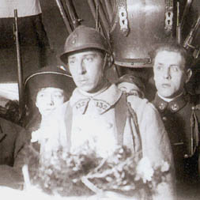
Quatre heures plus tard, en tenue "n°1« , casqué, sanglé, très impressionné, le jeune poilu pénètre dans la casemate transformée en chapelle ardente.
Suivi du Général Gouverneur BOICHUT, le Ministre André MAGINOT est entré dans la galerie en s'appuyant sur ses cannes.
La Sonnerie aux Morts retentit, exécutée par des jeunes soldats. Puis les tambours voilés de crêpe se sont mis à rouler lugubrement et les cœurs se sont serrés.
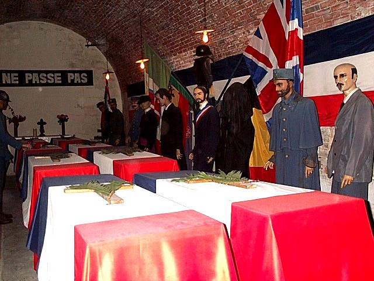
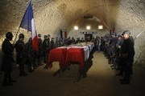
Le 10 novembre, les cercueils ont été placés sur deux colonnes de quatre dans une chapelle ardente dont la garde d'honneur fut confiée à une compagnie du 132ème régiment d'infanterie.
André MAGINOT, ministre des Pensions, s'est avancé vers un des jeunes soldats qui assurait la garde d'honneur, Auguste THIN, engagé volontaire de la classe 1919, fils d'un combattant disparu pendant la guerre, pupille de la Nation.
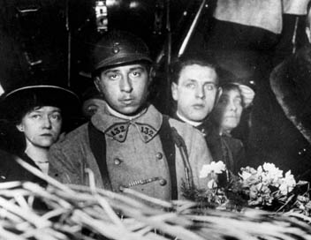
Un bouquet pour un cercueil :
Suivant un cérémonial bien établi, le soldat Auguste Thin, du 132e RI, vêtu d'un uniforme neuf, se trouve devant deux rangées de quatre cercueils en présence du ministre des Pensions André Maginot, qui lui demande, en lui présentant un bouquet d’œillets blancs et rouges, de le déposer sur un des huit cercueils qui sont ici.
« Celui que vous choisirez sera le soldat inconnu, que le peuple de France accompagnera demain sous l'Arc de triomphe ».
« Il me vint une pensée simple. J'appartiens au 6ème corps. En additionnant les chiffres de mon régiment, le 132, c'est également le chiffre 6 que je retiens.Ma décision est prise : ce sera le 6ème cercueil que je rencontrerai. »
Témoignage d'Auguste THIN
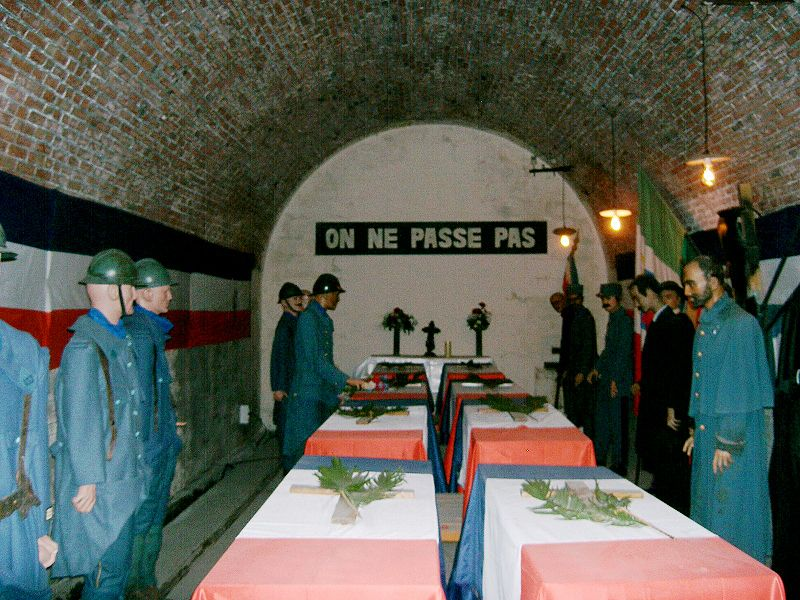
La suite est narrée par un journaliste de l'époque. « Un silence écrase les poitrines. Anxieuse attente, le soldat blême qu'il était est devenu rouge la démarche raide, il a fait le tour des huit cercueils. Il a tourné une première fois très vite, sans s'arrêter, puis au second tour, brusquement, il a déposé son bouquet sur le troisième cercueil de la rangée de gauche.
Choix du soldat inconnu - reconstitution à Verdun
Un murmure s'élève, soulageant les cœurs : "C'est fini, il a choisi". » Le soldat Auguste Thin, avait effectué son choix en additionnant les 3 chiffres composant le numéro de son régiment : 132. C'est ainsi qu'il a déposé son bouquet sur le sixième cercueil, comme il en témoigna plus tard.
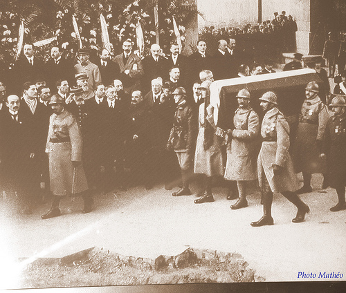
Hissé sur de solides épaules le cercueil fut ensuite transporté à la gare sur l'affut d'un canon de 75, tiré par un attelage, puis chargé à bord d'un train en direction de Paris. Dans la nuit il arrivait dans la capitale, où il était déposé place Denfert-Rochereau dans une chapelle ardente. Avant de gagner l'Arc de Triomphe, il fut porté au Panthéon où le président de la République Raymond Poincaré prononça une allocution.
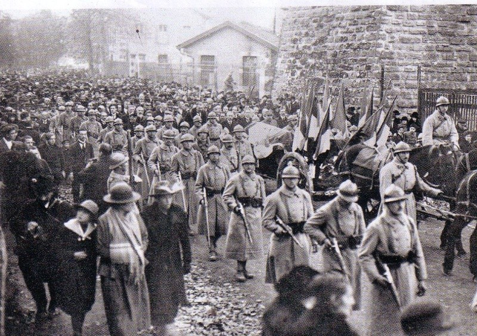
THIN suit le cercueil hissé d'abord sur le pavois de solides épaules, puis transporté sur l'affût d'un canon de 75 tiré par un double attelage.
Il suit le cortège funèbre jusqu'à la gare, avec les hommes de sa compagnie, au pas cadencé, le fusil sous le bras.
Le train s'ébranle, sans Auguste THIN.
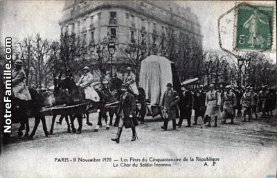
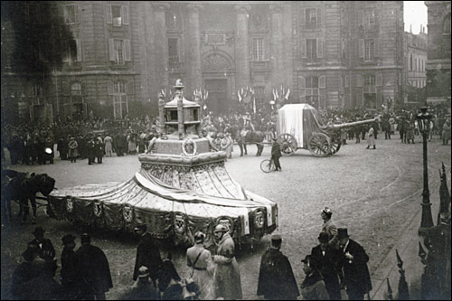
il est acheminé vers sa dernière demeure
Le 11 Novembre 1920
Après une escale au Panthéon, où le cœur de GAMBETTA est transféré au même moment, le cercueil du soldat inconnu, est placé sur un canon de 155,
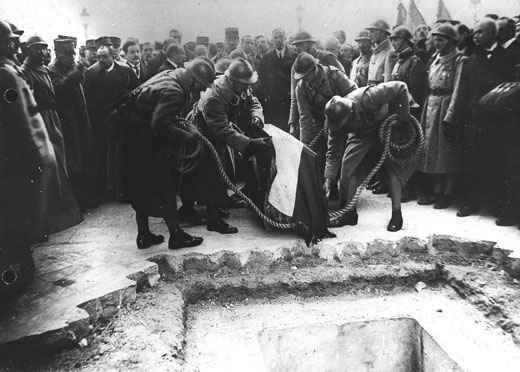
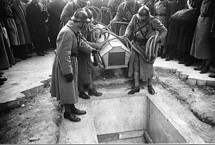
Le cercueil du soldat inconnu, béni par l'archevêque de PARIS, est déposé sous la voûte centrale de l'Arc de Triomphe, au milieu d'une foule immense, qui voit passer un des siens.
A la même heure, soldat parmi les autres, Auguste THIN enterrera les sept inconnus restés à la citadelle, ceux auxquels le destin a refusé la gloire, Sept tombes anonymes au cimetière du faubourg Paué, à VERDUN.
Trois mois après, Auguste THIN rend sa belle tenue neuve, son casque, son ceinturon, quitte sa peau de soldat, et prend celle des civils, sans jamais oublier son frère de guerre, là-bas, sous l'Arc de Triomphe
Auguste Thin
Auguste Thin faillit ne jamais rentrer dans l'histoire, il aurait pu rester un jeune engagé de 19 ans, à qui le 10 novembre 1920 il ne restait que trois mois de service à accomplir. Mais le soldat pressenti, « un ancien poilu de deuxième classe, le plus méritant possible » qui devait désigner l'un des cercueils exposés dans une galerie de la citadelle de Verdun pour être inhumé, le lendemain, tombant malade à quelques heures de la cérémonie, il est impératif de trouver un autre deuxième classe ayant fait la guerre.
C'est alors que le soldat Auguste Thin est désigné.
Fils d'un soldat mort pour la France, Auguste Thin est commis épicier, il s'est engagé à Lisieux le 3 janvier 1918, à l'âge de 19 ans. Il participe dans les rangs du 243e régiment d'infanterie à la contre-attaque en Champagne où il est gazé. Quelques mois après, il se retrouve à l'Hartmannswillerkopf, puis à l'Armistice, à Guebwiller.
En novembre 1920, il est à Verdun à la caserne Niel, soldat du 132e RI.
Fin
Auguste Thin,
né à Saint-Vaast-la-Hougue en 1899,
est mort le 10 avril 1982
L'exemple de la France suivi par les alliés :
La Belgique, le Royaume-Uni, l'Italie, les États-Unis, le Portugal, la Roumanie et le Canada comptent aussi parmi les pays qui ont édifié un monument à la gloire de leur soldat inconnu tombé sur les champs de bataille d'Europe.
Dans le cas du Canada, c'est en mai 2000 que les restes d'un soldat canadien non identifié mort au cours de la…
…Première Guerre mondiale a été rapatrié de France et inhumé dans une tombe spéciale devant le monument commémoratif de guerre à Ottawa. La Commonwealth War Graves Commission, qui s'occupe des sépultures des membres des forces du Commonwealth morts au cours des Première et Seconde Guerres mondiales, avait choisi la dépouille d'un soldat non identifié dans le cimetière situé dans les environs de la crête de Vimy, lieu et site d'une célèbre bataille[1] canadienne lors de la Grande Guerre.
L'hommage poétique
Le monde entier disait : la France est en danger ;Les barbares demain, camperont dans ses plaines.Alors, cet homme que nous nommions « l'étranger »Issu des monts latins ou des rives hellènesOu des bords d'outre-mer, s'étant pris à songerAu sort qui menaçait les libertés humaines,Vint à nous, et, s'offrant d'un cœur libre et léger,Dans nos rangs s'élança sur les hordes germaines.Quatre ans, il a peiné, saigné, souffert.Et puis un soir, il est tombé dans cet enfer...Qui sait si l'inconnu qui dort sous l'arche immense,Mêlant sa gloire épique aux orgueils du passéN'est pas cet étranger devenu fils de FranceNon par le sang reçu mais par le sang versé ?
Pascal Bonetti, 1920Extraits de « Légion notre mère, anthologie de la poésie légionnaire 1885-2000 », Éditions Italiques, ministère de la Défense
Images d'archive : la cérémonie et l'Arc de Triomphe.
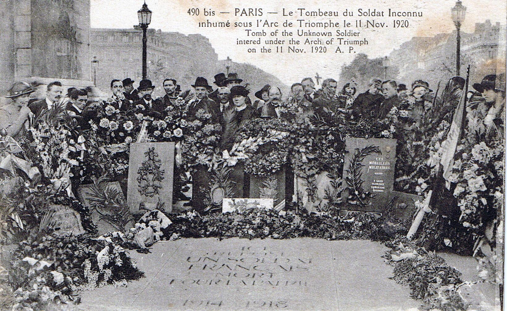
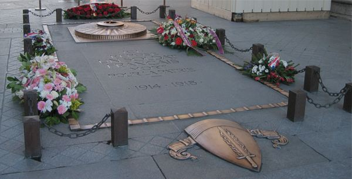
 River Cruises
River Cruises France's English newspaper
France's English newspaper British pies & bangers
British pies & bangers English for learners
English for learners